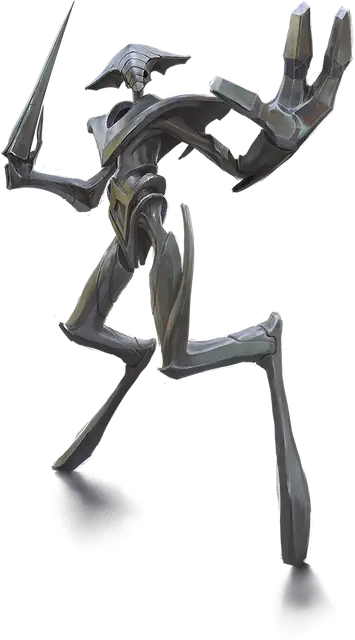

Рилмани феррумах
Ferrumach Rilmani
Средний Небожитель, нейтральный

Класс Доспеха 18 (природный доспех)
Хиты 136 (16к8 + 64)
Скорость 30 футов
| мод | спас | ||
|---|---|---|---|
| СИЛ | 19 | +4 | +8 |
| ЛОВ | 14 | +2 | +2 |
| ТЕЛ | 18 | +4 | +8 |
| мод | спас | ||
|---|---|---|---|
| ИНТ | 15 | +2 | +2 |
| МДР | 14 | +2 | +2 |
| ХАР | 10 | +0 | +0 |
Навыки Атлетика +8, Восприятие +6
Сопротивление урону психическая энергия
Чувства истинное зрение 120 футов, пассивное Восприятие 16
Языки любые два языка, Телепатия 120 фт.
Опасность 9 (5000 опыта)
Бонус мастерства +4
Особенности
Заостренные углы. Существо получает 10 (3к6) рубящего урона, если начинает свой ход будучи схваченным или держа феррумаха в захвате.
Пронзающий разбег. Если феррумах переместится как минимум на 20 футов по прямой к существу Большого размера или меньше, останавливаясь в пределах 5 футов от него, оно должно преуспеть в спасброске Силы Сл 16, иначе будет схвачено (Сл высвобождения 18) и получит 10 (3к6) колющего урона.
Действия
Мультиатака. Феррумах совершает три атаки Острой конечностью или Снарядом.
Острая конечность. . Рукопашная атака оружием: +8 к попаданию, досягаемость 10 футов, одна цель. Попадание: 9 (1к10 + 4) рубящего урона плюс 11 (2к10) урона психической энергией.
Снаряд. . Дальнобойная атака заклинанием: +8 к попаданию, дистанция 20/60 футов, одна цель. Попадание: 7 (1к6 + 4) колющего урона плюс 11 (2к10) урона психической энергией.
Использование заклинаний. Феррумах накладывает одно из следующих заклинаний, не нуждаясь в материальных компонентах, используя Интеллект в качестве базовой характеристики (Сл спасброска заклинания 14):
• Неограниченно: обнаружение магии [detect magic]
• 1/день каждое: рассеивание магии [dispel magic], град [ice storm]
Описание
Феррумахи - пехотинцы рилмани, сохраняющие равновесие между планами с помощью военной силы. Они бдительно охраняют Шпиль и сражаются под командованием аурумахов, для защиты нейтралитета мультивселенной. Феррумахи сверкают блеском чистого железа. Их тела отточены до бритвенной остроты, из которых они могут метать снаряды заточенного металла.
Рилмани
Рилмани охраняют баланс между силами и философиями мультивселенной. Они стремятся поддерживать планарное равновесие, гарантируя, что добро, зло, закон или хаос никогда не станут слишком могущественными или слишком слабыми. Для рилмани каждая из этих сил является фундаментальной для существования мультивселенной. Всякий раз, когда кто-то угрожает склонить чашу весов в свою пользу или план находится на грани разрушения, рилмани действуют, чтобы уравнять шансы.
В то время как рилмани можно встретить где угодно, чаще всего их можно встретить на их родном плане, во Внешних землях, где они работают над тем, чтобы ни одна сила не оказывала чрезмерного воздействия на Согласованные владения.
Рилмани прямоходящие двуногие, с телами из живого металла, который по внешнему виду варьируется от холодного железа до блестящего золота. У большинства из них гладкие лица с немногочисленными особенностями, а их необычная анатомия часто действует вопреки силам природы.